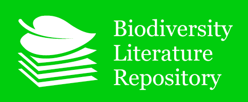
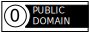

name: intro class: center, middle # The Biodiversity Literature Repository ## it takes more than just a license to be open by design IDW-SciDataCon 2022 • June 2022 Puneet Kishor Released under a [CC0 Public Domain Dedication](https://creativecommons.org/publicdomain/zero/1.0/). <div class="slidefooter"> <a href="/Biodiversity-Literature-Repository"><img src="/_lib/img/plazi.png" height="30"></a> <a rel="license" href="https://creativecommons.org/publicdomain/zero/1.0/"><img src="/_lib/img/zero.png" alt="CC0" width="30" height="30"></a> <div class="navlinks"> <a href="javascript:slideshow.gotoPreviousSlide()">prev</a> <a href="javascript:slideshow.gotoNextSlide()">next</a> </div> </div> --- layout: true <div class="slidefooter"> <a href="/Biodiversity-Literature-Repository"><img src="/_lib/img/plazi.png" height="30"></a> <a rel="license" href="https://creativecommons.org/publicdomain/zero/1.0/"><img src="/_lib/img/zero.png" alt="CC0" width="30" height="30"></a> <div class="navlinks"> <a href="javascript:slideshow.gotoPreviousSlide()">prev</a> <a href="javascript:slideshow.gotoNextSlide()">next</a> </div> </div> --- ## Help * Notes are hidden, but may be seen by pressing **P** on your keyboard. * Press **C** to clone a show. * Press **H** for other keyboard shortcuts. ??? notes here --- <h2>The Biodiversity Literature Repository</h2>  <ul class="incremental"> <li>The Biodiversity Literature Repository (BLR) is a research infrastructure (RI) comprising the BLR Community on Zenodo at the European Center for Nuclear Research (CERN), and services to search and retrieve the data such as Ocellus, the Zenodeo API, and the BLR website.</li> </ul> --- <h2>The Biodiversity Literature Repository</h2> <ul class="incremental"> <li>The Biodiversity Literature Repository (BLR) is a research infrastructure (RI) comprising the BLR Community on Zenodo at the European Center for Nuclear Research (CERN), and services to search and retrieve the data such as Ocellus, the Zenodeo API, and the BLR website.</li> <li>BLR’s focus is on biodiversity data liberated from scholarly publications, and it uses custom metadata linking to external vocabularies covering the needs of the biodiversity community.</li> </ul> --- <h2>The Biodiversity Literature Repository</h2> <ul class="incremental"> <li>The Biodiversity Literature Repository (BLR) is a research infrastructure (RI) comprising the BLR Community on Zenodo at the European Center for Nuclear Research (CERN), and services to search and retrieve the data such as Ocellus, the Zenodeo API, and the BLR website.</li> <li>BLR’s focus is on biodiversity data liberated from scholarly publications, and it uses custom metadata linking to external vocabularies covering the needs of the biodiversity community.</li> <li>BLR is the single largest community in Zenodo. Its data is widely reused, for example by the Global Biodiversity Information Facility (GBIF).</li> </ul> --- <h2>The Biodiversity Literature Repository</h2> <h2 class="subtitle">by the numbers</h2> <table> <tbody> <tr><th width="50%">articles</th><td> > 50000</td></tr> </tbody> </table> --- <h2>The Biodiversity Literature Repository</h2> <h2 class="subtitle">by the numbers</h2> <table> <tbody> <tr><th width="50%">articles</th><td> > 50000</td></tr> <tr><th>treatments</th><td> > 750000</td></tr> </tbody> </table> --- <h2>The Biodiversity Literature Repository</h2> <h2 class="subtitle">by the numbers</h2> <table> <tbody> <tr><th width="50%">articles</th><td> > 50000</td></tr> <tr><th>treatments</th><td> > 750000</td></tr> <tr><th>occurrences</th><td>~ 250000</td></tr> </tbody> </table> --- <h2>The Biodiversity Literature Repository</h2> <h2 class="subtitle">by the numbers</h2> <table> <tbody> <tr><th width="50%">articles</th><td> > 50000</td></tr> <tr><th>treatments</th><td> > 750000</td></tr> <tr><th>occurrences</th><td>~ 250000</td></tr> <tr><th>figures</th><td> > 450000</td></tr> </tbody> </table> --- <h2>The Biodiversity Literature Repository</h2> <h2 class="subtitle">by the numbers</h2> <table> <tbody> <tr><th width="50%">articles</th><td> > 50000</td></tr> <tr><th>treatments</th><td> > 750000</td></tr> <tr><th>occurrences</th><td>~ 250000</td></tr> <tr><th>figures</th><td> > 450000</td></tr> <tr> <th>observation records</th> <td> ~ 2 million<br> > 350000 are geo-referenced </td> </tr> </tbody> </table> --- <h2>The Biodiversity Literature Repository</h2> <h2 class="subtitle">open – by law</h2> <table class="background"> <tbody> <tr><th width="50%">articles</th><td> > 50000</td></tr> <tr><th>treatments</th><td> > 750000</td></tr> <tr><th>occurrences</th><td>~ 250000</td></tr> <tr><th>figures</th><td> > 450000</td></tr> <tr> <th>observation records</th> <td> ~ 2 million<br> > 350000 are geo-referenced </td> </tr> </tbody> </table> <div class="watermark">Everything published under CC0 Public Domain Dedication</div> --- <h2>The Biodiversity Literature Repository</h2> But is it really open? Let’s see… --- <h2>The Biodiversity Literature Repository</h2> <h2 class="subtitle">open – by law</h2> <ul class="incremental"> <li>All data in BLR are published under the CC0 Public Domain Dedication. In simple words, all data are free for anyone to use, anywhere, for any purpose. There are no restrictions imposed by Plazi. There is no need to ask permission.</li> </ul> --- <h2>The Biodiversity Literature Repository</h2> <h2 class="subtitle">open – by law</h2> <ul class="incremental"> <li>All data in BLR are published under the CC0 Public Domain Dedication. In simple words, all data are free for anyone to use, anywhere, for any purpose. There are no restrictions imposed by Plazi. There is no need to ask permission.</li> <li>There is no legal obligation even to give us any credit. But, as is customary in science, it would be nice if BLR were cited if its data were used.</li> </ul> --- <h2>The Biodiversity Literature Repository</h2> <h2 class="subtitle">open – by availability</h2> <pre> ┌──────────────┐ ┌───────┐ │biolitrepo.org│ │Zenodo │ └──────────────┘ └───────┘ ▲ ▲ │ │ ┌───────┐ ┌───────────────┐ ┌───────┐ │Zenodeo│◀──│ TreatmentBank │──▶│ GBIF │ └───────┘ └───────────────┘ └───────┘ │ │ ▼ ▼ ┌─────────┐ ┌───────────┐ │ Ocellus │ │Synospecies│ └─────────┘ └───────────┘ </pre> --- <h2>The Biodiversity Literature Repository</h2> <h2 class="subtitle">open – by availability</h2> .left-column[ <ul class="incremental"> <li>via the web</li> </ul> ] .right-column[ <img src="../img/data-via-web.jpg" style="width: 100%; max-width: 300px;"> ] --- <h2>The Biodiversity Literature Repository</h2> <h2 class="subtitle">open – by availability</h2> .left-column[ <ul class="incremental"> <li>via the web</li> <li>via RESTful APIs</li> </ul> ] .right-column[ ``` curl -X 'GET' \ 'https://test.zenodeo.org/v3/treatments?q=Monomorium%20dryhimi' \ -H 'accept: application/json' { "item":{ "search":{ "q":"Monomorium dryhimi", }, "result":{ "count":2, "records":[ { "treatmentId":"8714C2BD8FA016653CA260AB3F9690D1", "treatmentTitle":"Monomorium sarawatensis Sharaf & Aldawood, sp. n.", "treatmentDOI":"", "treatmentLSID":"urn:lsid:zoobank.org:act:9E547C91-E6B5-4E42-9DC2-386D846C4167", "zenodoDep":"", "zoobankId":"", "articleId":"FFBDFA1CFFA902103179F819FFA8EC3B", "articleTitle":"A preliminary study on the insect fauna of Al-Baha Province, Saudi Arabia, with descriptions of two new species", "articleAuthor":"El-Hawagry, Magdi S., Khalil, Mohammed W., Sharaf, Mostafa R., Hassan H. Fadl, & Aldawood, Abdulrahman S.", "articleDOI":"http://dx.doi.org/10.3897/zookeys.274.4529", … }, … ], } } } ``` ] --- <h2>The Biodiversity Literature Repository</h2> <h2 class="subtitle">open – by availability</h2> .left-column[ <ul class="incremental"> <li>via the web</li> <li>via RESTful APIs</li> <li>via SPARQL queries</li> </ul> ] .right-column[ ``` PREFIX rdf: <http://www.w3.org/1999/02/22-rdf-syntax-ns#> PREFIX treat: <http://plazi.org/vocab/treatment#> SELECT DISTINCT * WHERE { <http://taxon-concept.plazi.org/id/Animalia/Tyrannosaurus_rex_Osborn_1905> ((^treat:deprecates/(treat:augmentsTaxonConcept|treat:definesTaxonConcept))|((^treat:augmentsTaxonConcept|^treat:definesTaxonConcept)/treat:deprecates))* ?tc . } { "head": { "vars": [ "tc" ] }, "results": { "bindings": [ { "tc": { "type": "uri", "value": "http://taxon-concept.plazi.org/id/Animalia/Aublysodon_molnaris_Paul_1988" } }, { "tc": { "type": "uri", "value": "http://taxon-concept.plazi.org/id/Animalia/Dynamosaurus_imperiosus_Osborn_1905" } }, … ] } } ``` ] --- <h2>The Biodiversity Literature Repository</h2> <h2 class="subtitle">open – by semantics</h2> <ul class="incremental"> <li>conforms to standards</li> </ul> --- <h2>The Biodiversity Literature Repository</h2> <h2 class="subtitle">open – by semantics</h2> <ul class="incremental"> <li>conforms to standards,</li> <li>using TaxPub, an Extension of the Journal Publishing Tag Set NISO JATS Version 1.1 (ANSI/NISO Z39.96-2015)</li> </ul> --- <h2>The Biodiversity Literature Repository</h2> <h2 class="subtitle">open – by semantics</h2> <ul class="incremental"> <li>conforms to standards,</li> <li>using TaxPub, an Extension of the Journal Publishing Tag Set NISO JATS Version 1.1 (ANSI/NISO Z39.96-2015)</li> </ul> ```xml <tp:taxon-treatment> <tp:nomenclature> <tp:taxon-name> <tp:taxon-name-part taxon-name-part-type="genus">Monomorium</tp:taxon-name-part> <tp:taxon-name-part taxon-name-part-type="species">dryhimi</tp:taxon-name-part> <object-id xlink:type="simple">urn:lsid:zoobank.org:act:4C171A6D-B1F5-4D4D-BBAD-CE2250167E5B</object-id> <object-id xlink:type="simple">http://species-id.net/wiki/Monomorium_dryhimi</object-id> </tp:taxon-name> <tp:taxon-authority>Aldawood & Sharaf</tp:taxon-authority> <tp:taxon-status xlink:type="simple">sp. n.</tp:taxon-status> <xref ref-type="fig" rid="F1">Figs 1–7</xref> </tp:nomenclature> <tp:treatment-sec sec-type="description"> <title>Holotype worker.</title> <p>TL1.84, HL 0.48, HW 0.34, SL 0.31, ML 0.46, EL 0.08, PRW 0.22, PL 0.14, PW 0.11, PPL 0.08, PPW 0.11, SI 91, CI 71.</p> </tp:treatment-sec> ... </tp:taxon-treatment> ``` --- <h2>The Biodiversity Literature Repository</h2> <h2 class="subtitle">open – by longevity</h2> <ul class="incremental"> <li>designed for long-term archival</li> </ul> --- <h2>The Biodiversity Literature Repository</h2> <h2 class="subtitle">open – by longevity</h2> <ul class="incremental"> <li>designed for long-term archival,</li> <li> published on Zenodo</li> </ul> --- <h2>The Biodiversity Literature Repository</h2> <h2 class="subtitle">open – by longevity</h2> <ul class="incremental"> <li>designed for long-term archival, </li> <li>published on Zenodo,</li> <li>hosted in the same data-center that hosts CERN data</li> </ul> --- <h2>Open Definition</h2> The Open Definition version 2.1 prescribes four conditions for openness of a work -- <ol> <li>it must be published under an open license or be in the public domain,</li> <li>it must be accessible easily and at no more than the cost of reproduction, preferably be downloadable via the internet</li> <li>it must be readily readable by a computer, and</li> <li>it must be available in an open format.</li> </ol> --- <h2>The Biodiversity Literature Repository</h2> <h2 class="subtitle">open – by design</h2> <table> <tbody> <tr><th width="60%">Open Definition</th><th colspan="2" width="40%">BLR</th></tr> <tr> <td>published under an open license or be in the public domain</td> <td>✓</td> <td></td> </tr> </tbody> </table> --- <h2>The Biodiversity Literature Repository</h2> <h2 class="subtitle">open – by design</h2> <table> <tbody> <tr><th width="60%">Open Definition</th><th colspan="2" width="40%">BLR</th></tr> <tr> <td>published under an open license or be in the public domain</td> <td>✓</td> <td></td> </tr> <tr> <td>accessible easily and at no more than the cost of reproduction, preferably be downloadable via the internet</td> <td>✓</td> <td>GBIF, Zenodo, TreatmentBank, Zenodeo, Synospecies, Ocellus</td> </tr> </tbody> </table> --- <h2>The Biodiversity Literature Repository</h2> <h2 class="subtitle">open – by design</h2> <table> <tbody> <tr><th width="60%">Open Definition</th><th colspan="2" width="40%">BLR</th></tr> <tr> <td>published under an open license or be in the public domain</td> <td>✓</td> <td></td> </tr> <tr> <td>accessible easily and at no more than the cost of reproduction, preferably be downloadable via the internet</td> <td>✓</td> <td>GBIF, Zenodo, TreatmentBank, Zenodeo, Synospecies, Ocellus</td> </tr> <tr> <td>readily readable by a computer</td> <td>✓</td> <td>APIs</td> </tr> </tbody> </table> --- <h2>The Biodiversity Literature Repository</h2> <h2 class="subtitle">open – by design</h2> <table> <tbody> <tr><th width="60%">Open Definition</th><th colspan="2" width="40%">BLR</th></tr> <tr> <td>published under an open license or be in the public domain</td> <td>✓</td> <td></td> </tr> <tr> <td> accessible easily and at no more than the cost of reproduction, preferably be downloadable via the internet </td> <td>✓</td> <td>GBIF, Zenodo, TreatmentBank, Zenodeo, Synospecies, Ocellus</td> </tr> <tr> <td>readily readable by a computer</td> <td>✓</td> <td>APIs</td> </tr> <tr> <td>available in an open format</td> <td>✓</td> <td>TaxPub</td> </tr> </tbody> </table> --- <h2>The Biodiversity Literature Repository</h2> Great, but is it FAIR? Let’s see… --- <h2>The FAIR Guiding Principles</h2> <cite>Wilkinson, M., Dumontier, M., Aalbersberg, I. et al. The FAIR Guiding Principles for scientific data management and stewardship. Sci Data 3, 160018 (2016). https://doi.org/10.1038/sdata.2016.18</cite> <ul> <li>To be Findable: <ul> <li>F1. (meta)data are assigned a globally unique and persistent identifier</li> <li>F2. data are described with rich metadata (defined by R1 below)</li> <li>F3. metadata clearly and explicitly include the identifier of the data it describes</li> <li>F4. (meta)data are registered or indexed in a searchable resource</li> </ul> </li> <li>BLR <ul> <li>Every extracted treatment gets a DOI and is linked back to the source article</li> <li>Treatments have dozens of associated metadata fields</li> <li>Metadata are fully searchable</li> </ul> </ul> --- <h2>The FAIR Guiding Principles</h2> <cite>Wilkinson, M., Dumontier, M., Aalbersberg, I. et al. The FAIR Guiding Principles for scientific data management and stewardship. Sci Data 3, 160018 (2016). https://doi.org/10.1038/sdata.2016.18</cite> <ul> <li>To be Findable: <ul> <li>F1. (meta)data are assigned a globally unique and persistent identifier</li> <li>F2. data are described with rich metadata (defined by R1 below)</li> <li>F3. metadata clearly and explicitly include the identifier of the data it describes</li> <li>F4. (meta)data are registered or indexed in a searchable resource</li> </ul> </li> <li>BLR <span class="fair">is Findable ✓</span> <ul> <li>Every extracted treatment gets a DOI and is linked back to the source article</li> <li>Treatments have dozens of associated metadata fields</li> <li>Metadata are fully searchable</li> </ul> </ul> --- <h2>The FAIR Guiding Principles</h2> <cite>Wilkinson, M., Dumontier, M., Aalbersberg, I. et al. The FAIR Guiding Principles for scientific data management and stewardship. Sci Data 3, 160018 (2016). https://doi.org/10.1038/sdata.2016.18</cite> <ul> <li>To be Accessible: <ul> <li>A1. (meta)data are retrievable by their identifier using a standardized communications protocol <ul> <li>A1.1 the protocol is open, free, and universally implementable</li> <li>A1.2 the protocol allows for an authentication and authorization procedure, where necessary</li> </ul> </li> <li>A2. metadata are accessible, even when the data are no longer available</li> </ul> </li> <li>BLR <ul> <li>APIs and searchable indexes</li> <li>long-term archives and distributed availability</li> </ul> </li> </ul> --- <h2>The FAIR Guiding Principles</h2> <cite>Wilkinson, M., Dumontier, M., Aalbersberg, I. et al. The FAIR Guiding Principles for scientific data management and stewardship. Sci Data 3, 160018 (2016). https://doi.org/10.1038/sdata.2016.18</cite> <ul> <li>To be Accessible: <ul> <li>A1. (meta)data are retrievable by their identifier using a standardized communications protocol <ul> <li>A1.1 the protocol is open, free, and universally implementable</li> <li>A1.2 the protocol allows for an authentication and authorization procedure, where necessary</li> </ul> </li> <li>A2. metadata are accessible, even when the data are no longer available</li> </ul> </li> <li>BLR <span class="fair">is Accessible ✓</span> <ul> <li>APIs and searchable indexes</li> <li>long-term archives and distributed availability</li> </ul> </li> </ul> --- <h2>The FAIR Guiding Principles</h2> <cite>Wilkinson, M., Dumontier, M., Aalbersberg, I. et al. The FAIR Guiding Principles for scientific data management and stewardship. Sci Data 3, 160018 (2016). https://doi.org/10.1038/sdata.2016.18</cite> <ul> <li>To be Interoperable: <ul> <li>I1. (meta)data use a formal, accessible, shared, and broadly applicable language for knowledge representation.</li> <li>I2. (meta)data use vocabularies that follow FAIR principles</li> <li>I3. (meta)data include qualified references to other (meta)data</li> </ul> </li> <li>BLR <ul> <li>TaxPub</li> <li>LOD</li> </ul> </li> </ul> --- <h2>The FAIR Guiding Principles</h2> <cite>Wilkinson, M., Dumontier, M., Aalbersberg, I. et al. The FAIR Guiding Principles for scientific data management and stewardship. Sci Data 3, 160018 (2016). https://doi.org/10.1038/sdata.2016.18</cite> <ul> <li>To be Interoperable: <ul> <li>I1. (meta)data use a formal, accessible, shared, and broadly applicable language for knowledge representation.</li> <li>I2. (meta)data use vocabularies that follow FAIR principles</li> <li>I3. (meta)data include qualified references to other (meta)data</li> </ul> </li> <li>BLR <span class="fair">is Interoperable ✓</span> <ul> <li>TaxPub</li> <li>LOD</li> </ul> </li> </ul> --- <h2>The FAIR Guiding Principles</h2> <cite>Wilkinson, M., Dumontier, M., Aalbersberg, I. et al. The FAIR Guiding Principles for scientific data management and stewardship. Sci Data 3, 160018 (2016). https://doi.org/10.1038/sdata.2016.18</cite> <ul> <li>To be Reusable: <ul> <li>R1. meta(data) are richly described with a plurality of accurate and relevant attributes</li> <li>R1.1. (meta)data are released with a clear and accessible data usage license</li> <li>R1.2. (meta)data are associated with detailed provenance</li> <li>R1.3. (meta)data meet domain-relevant community standards</li> </ul> </li> <li>BLR <ul> <li>CC0</li> </ul> </li> </ul> --- <h2>The FAIR Guiding Principles</h2> <cite>Wilkinson, M., Dumontier, M., Aalbersberg, I. et al. The FAIR Guiding Principles for scientific data management and stewardship. Sci Data 3, 160018 (2016). https://doi.org/10.1038/sdata.2016.18</cite> <ul> <li>To be Reusable: <ul> <li>R1. meta(data) are richly described with a plurality of accurate and relevant attributes</li> <li>R1.1. (meta)data are released with a clear and accessible data usage license</li> <li>R1.2. (meta)data are associated with detailed provenance</li> <li>R1.3. (meta)data meet domain-relevant community standards</li> </ul> </li> <li>BLR <span class="fair">is Reusable ✓</span> <ul> <li>CC0</li> </ul> </li> </ul> --- <h2>The Biodiversity Literature Repository</h2> <h2 class="subtitle">open – by design</h2> <h2 class="subtitle">FAIR – by design</h2> not as an afterthought, but from the moment of inception, and every step of the way.